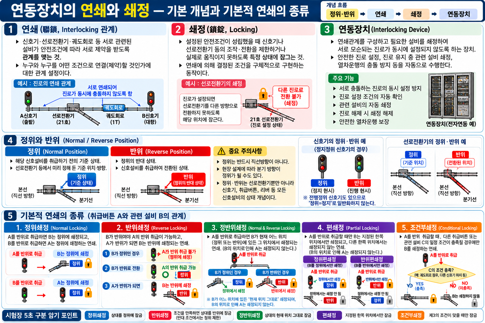
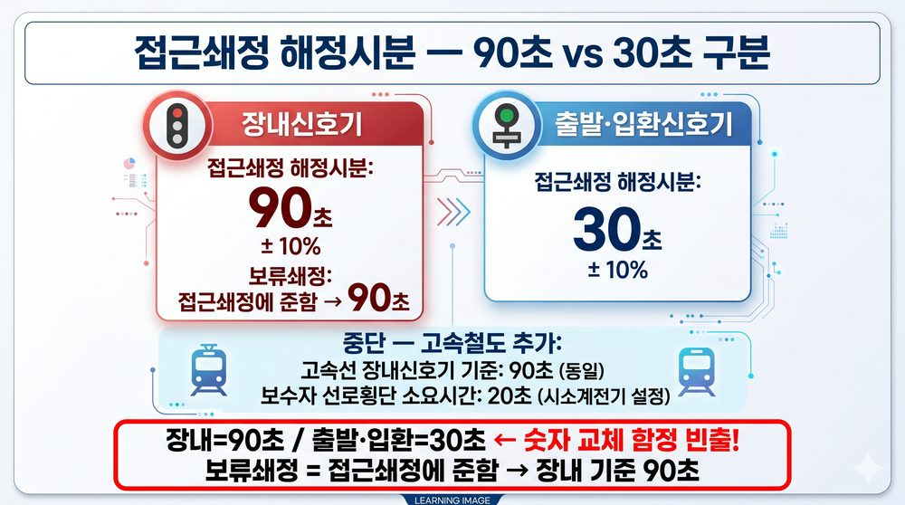

07-08 연동장치(Interlocking) — 정의·연쇄·쇄정
§ 0. 이 단원에서 반드시 먼저 알아야 할 용어 (8개)
07-06·07-07에서 이어지는 핵심 용어들입니다. 궤도회로·신호기를 먼저 학습한 뒤 읽으세요.
🔗 선행 단원: 07-06 궤도회로 원리 — 계전기 여자/낙하·열차 점유 검지 / 07-07 AF궤도회로 — 무절연 구간 구분 원리를 먼저 확인하세요.
연동장치 (Interlocking)
Interlocking System
신호기·선로전환기·궤도회로를 상호 연결해 잘못된 동시 조작을 방지하는 안전 장치
쇄정 (Locking)
Locking
설정된 진로에서 선로전환기 또는 신호기가 임의로 움직이지 못하도록 잠그는 기능
해정 (Unlocking)
Unlocking / Release
쇄정 상태를 해제하여 선로전환기·신호기가 다시 조작 가능하게 푸는 것
정위 (Normal Position)
Normal Position
선로전환기가 기준으로 정해진 평상시 위치에 있는 상태
반위 (Reverse Position)
Reverse Position
선로전환기가 정위의 반대쪽 진로로 전환된 상태
진로 (Route)
Route / Train Path
열차 또는 차량이 신호기에 의해 허용받아 통과하도록 설정된 선로 경로
연쇄 (Interlocking Dependency)
Interlocking Dependency
신호기·선로전환기 간 상호 조건 관계 — A 조건 미충족 시 B 동작 불가
전자연동장치 (EI)
Electronic Interlocking (EI)
연동 논리를 전자·컴퓨터 기반으로 처리하며 안전 논리와 이중화를 적용하는 현대 표준
§ 1. 연동장치(Interlocking) 정의와 목적
개념 A연동장치 정의 ⚠️ 최빈출
| 항목 | 내용 |
|---|---|
| 정의 | 신호기·선로전환기·궤도회로 등을 상호 연동하여, 충돌 진로가 동시에 설정되지 않도록 하는 안전장치 |
| 목적 | ① 열차 충돌 방지 ② 탈선 방지 ③ 잘못된 진로 설정 방지 |
| 적용 설비 | 신호기 ↔ 선로전환기 ↔ 궤도회로 (3종 연동) |
| 종류 | 기계식 (레버 연동기) → 전기식 (전기연동기) → 전자식: 전자연동장치 EI (현대 표준) |
⚠️ 함정 주의: 연동장치 목적 = 충돌·탈선 방지 — 속도 제어·제동 거리 단축 아님
⚠️ 함정 주의: "ATS가 연동 기능을 한다" → 오답. ATS = 속도 제어. 연동 기능은 연동장치 전담
이론 배경: 연동장치는 안전 인터록(Interlock)입니다. 예를 들어, 선로전환기가 정위에 없으면 해당 진로의 신호기는 진행 현시를 할 수 없도록 상호 조건을 걸어 놓습니다. 이 조건 관계를 연쇄라 하고, 조건이 충족될 때까지 설비를 잠그는 것을 쇄정이라 합니다.
§ 2. 연쇄(Chain)와 쇄정(Lock)의 차이
개념 B연쇄 vs 쇄정 ⚠️
| 구분 | 연쇄 (Dependency) | 쇄정 (Locking) |
|---|---|---|
| 의미 | 신호기·선로전환기 간 상호 조건 관계 | 조건에 따라 설비를 물리적·전기적으로 잠금 |
| 성격 | 논리적 관계 (IF A 충족 → B 허용) | 물리/전기적 잠금 행위 |
| 예시 | 선로전환기 정위 → 신호기 진행 허용 (연쇄 조건) | 열차 접근 시 선로전환기 전환 불가로 잠금 |
| 기억법 | 연쇄 = 조건 (Chain of conditions) | 쇄정 = 잠금 (Lock) |
★ 연쇄 = 조건 관계 / 쇄정 = 잠금 행위 — 연쇄가 쇄정의 근거를 제공함

연동장치 — 연쇄(조건 관계)와 쇄정(잠금 행위) 개념도
이론 배경: 연쇄는 "A 조건이 충족되어야 B가 동작할 수 있다"는 논리 관계입니다. 쇄정은 이 연쇄 조건이 미충족 상태일 때 설비가 움직이지 못하도록 실제로 잠그는 행위입니다. 두 개념은 함께 작동하며, 연동장치의 핵심 메커니즘을 구성합니다.
§ 3. 정위 / 반위 / 전환 검지
개념 C정위·반위·전환 검지 ⚠️
| 용어 | 정의 | 핵심 |
|---|---|---|
| 정위 | 취급버튼·리버 등으로 해당 신호설비를 취급하기 전의 기준 상태 | 직선·본선 방향과 항상 같은 뜻은 아님 |
| 반위 | 정위의 반대 상태 — 취급하여 기준 상태와 반대 위치가 된 상태 | 분기선·측선 방향과 항상 같은 뜻은 아님 |
| 전환 검지 | 선로전환기가 명령된 끝 위치까지 실제로 전환되었는지 확인하는 기능 | 전환 완료 확인 → 신호 허가 연동 |
⚠️ 함정 주의: 정위=직선·본선, 반위=분기·측선으로 일반화하면 안 됨. 정위는 해당 설비의 취급 전 기준 상태, 반위는 그 반대 상태
★ 기억법: 정위 = 취급 전 기준 상태 / 반위 = 그 반대 상태
🔄 진로 설정 순서
① 진로 요청
→
② 선로전환기 전환 (정위/반위)
→
③ 전환 검지 확인
→
④ 쇄정 (잠금)
→
⑤ 신호기 진행 현시
이론 배경: 선로전환기는 열차 진로를 결정하므로 전환이 완료되지 않으면 신호기가 진행 현시를 할 수 없습니다. 전환 검지(End Position Detection)가 정위 또는 반위 완료를 확인한 뒤에야 쇄정이 이뤄지고, 그 후 신호기 연동이 허가됩니다.
§ 4. 쇄정의 기본 형태 — 정위·반위·정반위·편·조건부 쇄정 ⚠️ 빈출
개념 D쇄정의 세부 용어 5종 (철도신호지침 용어 정의)
| 종류 | 정의 | 초학자 해석 |
|---|---|---|
| 정위쇄정 | 갑·을 취급버튼의 상호관계에서 한쪽을 반위로 취급했을 때 상대 취급버튼을 정위로 쇄정하는 관계 | 상대 장치를 기준 위치에 묶어 두는 쇄정 |
| 반위쇄정 | 정해진 연쇄조건에서 상대 취급버튼을 반위 위치로 쇄정하고, 조건이 맞지 않으면 다른 취급을 허용하지 않는 관계 | 상대 장치를 반대 위치에 묶어 두는 쇄정 |
| 정반위쇄정 | 갑을 반위로 취급했을 때 을이 정위든 반위든 현재 있는 위치 그대로 쇄정되는 관계 | 어느 방향인가가 아니라 ‘현재 위치를 유지’시키는 쇄정 |
| 편쇄정 | 갑을 반위로 취급했을 때 을을 정위 또는 반위 중 한쪽 위치에서만 쇄정하는 관계. 정위편쇄정·반위편쇄정으로 구분 | 한쪽 위치에서만 성립하는 편측(偏) 쇄정 |
| 조건부쇄정 | 갑을 반위로 취급했을 때 을이 다른 취급버튼의 특정 조건이 충족된 경우에만 쇄정되는 관계 | 추가 조건이 맞아야 성립하는 쇄정 |
📋 용어 근거: 철도신호지침의 쇄정 용어 정의에 정위쇄정·반위쇄정·정반위쇄정·편쇄정·조건부쇄정이 명시됨. 현행 국가철도공단 설계기준에는 KR S-06040 연동장치 쇄정 방법 Rev.6(2025.1.31 시행)이 존재함.
⚠️ 함정 주의: sig_261의 보기에서는 ③ 연속쇄정이 비해당 정답. 이를 ‘쇄정의 종류가 총 4종뿐’이라고 확대 해석하면 안 됨. 편쇄정 등 다른 쇄정 용어도 존재
★ 용어 묶음: 정·반·정반·편·조 = 정위쇄정 / 반위쇄정 / 정반위쇄정 / 편쇄정 / 조건부쇄정
📝 기출 예시 (sig_261)
Q. 다음 중 쇄정의 종류에 해당하지 않는 것은?
① 정위쇄정 ② 반위쇄정 ③ 연속쇄정 ④ 조건부쇄정
① 정위쇄정 ② 반위쇄정 ③ 연속쇄정 ④ 조건부쇄정
정답: ③ 연속쇄정 — 해당 기출 보기 중 쇄정 종류에 해당하지 않는 항목
오답함정: 이 문항만 보고 ‘쇄정 종류는 4종’이라고 암기하지 말 것. 정반위쇄정·편쇄정 등은 별도 용어 정의로 구분
§ 5. 시험 학습 핵심 쇄정 6종 ⚠️ 빈출
※ 위 6종(철사·진로·진로구분·접근·보류·시간쇄정)은 본 교재의 핵심 학습범위이며 쇄정의 전체 종류를 의미하지 않는다. 폐로쇄정·표시쇄정·조사쇄정 등은 현재 본문 수록 대상 아님.
개념 E쇄정 6종 — 언제 걸리는가 / 무엇을 막는가 / 언제 풀리는가
| 종류 | 언제 걸리는가 | 무엇을 막는가 | 언제 풀리는가 |
|---|---|---|---|
| 진로쇄정 | 진행 현시에 의해 열차가 해당 진로에 진입했을 때 | 관계 선로전환기가 있는 진로를 통과 중 임의 전환하지 못하게 함 | 열차가 관계 선로전환기가 있는 모든 궤도회로를 통과한 후 |
| 진로구분쇄정 | 진행 현시에 의해 열차가 진로에 진입하여 구분된 궤도구간을 점유할 때 | 해당 구간의 관계 선로전환기 등을 전환하지 못하게 함 | 열차가 일정 구간을 통과할 때마다 그 구간을 순차 해정 |
| 철사쇄정 Detector Locking | 열차가 선로전환기가 있는 궤도회로를 점유했을 때 | 그 선로전환기의 전환을 금지하여 열차 통과 중 전환 방지 | 해당 궤도회로의 점유가 해소된 후 |
| 접근쇄정 | 진행신호 현시 후 열차가 신호기 외방 접근구간에 진입하거나, 열차가 접근구간에 있는 상태에서 진행신호를 현시했을 때 | 해당 진로의 선로전환기 등을 전환하지 못하게 함 | 접근구간에 열차가 없으면 즉시. 열차가 있으면 신호기 내방 진입 또는 정지신호 현시 후 정해진 시분 경과 후 |
| 보류쇄정 | 신호기·입환표지에 일단 진행을 지시하는 신호를 현시한 후 | 열차 위치와 관계없이 일정 조건이 충족될 때까지 진로 내 선로전환기 등을 전환하지 못하게 함 | 열차가 해당 진로에 진입하거나, 정지신호 현시 후 정해진 시분 경과 후 (해정시분은 접근쇄정에 준함) |
| 시간쇄정 | 갑·을 취급버튼이 상호 쇄정된 상태에서 갑을 정위로 복귀했을 때 | 을을 즉시 해정하지 않고 일정시간 계속 쇄정 | 설정된 일정시간이 경과한 후 |
초학자 포인트 — 진로쇄정 vs 진로구분쇄정:
• 진로쇄정: 열차가 진로에 들어서면 진로 전체를 하나로 묶어 잠금 → 열차가 진로 끝까지 나올 때까지 일괄 해정. 마치 "터널 전체를 점유"하는 개념.
• 진로구분쇄정: 진로를 구간 단위로 나누어, 열차가 지나온 구간부터 순차적으로 잠금 해제 → 뒤따라오는 열차 또는 다른 진로에 대한 진로 용량을 효율화. 마치 "터널을 칸별로 통과하면서 뒤 칸부터 열어주는" 개념.
• 진로쇄정: 열차가 진로에 들어서면 진로 전체를 하나로 묶어 잠금 → 열차가 진로 끝까지 나올 때까지 일괄 해정. 마치 "터널 전체를 점유"하는 개념.
• 진로구분쇄정: 진로를 구간 단위로 나누어, 열차가 지나온 구간부터 순차적으로 잠금 해제 → 뒤따라오는 열차 또는 다른 진로에 대한 진로 용량을 효율화. 마치 "터널을 칸별로 통과하면서 뒤 칸부터 열어주는" 개념.
접근쇄정 vs 보류쇄정 vs 시간쇄정 — 세 개를 구별하는 핵심:
• 접근쇄정: 진행신호와 접근구간 열차 점유가 결합되면 발동 → 관계 선로전환기 등을 전환하지 못하게 함. 열차가 접근 중이면 신호를 정지로 바꾸어도 즉시 진로를 풀지 않음
• 보류쇄정: 접근쇄정을 시행하지 않는 경우 등에 사용 → 일단 진행신호를 현시하면 열차 위치와 관계없이 진로 내 선로전환기 등을 일정 조건까지 계속 쇄정
• 시간쇄정: 상호 쇄정된 취급에서 쇄정 측을 정위로 복귀해도 상대 취급을 즉시 풀지 않고 일정시간 후 해정하는 방식
• 접근쇄정: 진행신호와 접근구간 열차 점유가 결합되면 발동 → 관계 선로전환기 등을 전환하지 못하게 함. 열차가 접근 중이면 신호를 정지로 바꾸어도 즉시 진로를 풀지 않음
• 보류쇄정: 접근쇄정을 시행하지 않는 경우 등에 사용 → 일단 진행신호를 현시하면 열차 위치와 관계없이 진로 내 선로전환기 등을 일정 조건까지 계속 쇄정
• 시간쇄정: 상호 쇄정된 취급에서 쇄정 측을 정위로 복귀해도 상대 취급을 즉시 풀지 않고 일정시간 후 해정하는 방식
★ 진로쇄정 = 진로 전체 일괄 해정 / 진로구분쇄정 = 통과 구간만 순차 해정
★ 접근쇄정 = 진행신호 + 접근구간 열차 점유 / 보류쇄정 = 접근쇄정을 시행하지 않는 경우 등에 적용, 진행신호 현시 후 진로 내 선로전환기 등을 일정 조건까지 쇄정
⚠️ 접근쇄정 해정시분 시험 빈출: 장내신호기 = 90초±10% / 출발·입환신호기 = 30초±10% — 수치 교체 함정 주의
📌 철사쇄정 용어 표기: 일부 자료에서 "궤도쇄정(軌道鎖錠)" 또는 "TC쇄정"으로도 표기됨. 철도신호지침 계열에서는 "철사쇄정(Detector Locking)"이 공식 표기. 핵심 정의: 선로전환기가 설치된 궤도회로를 열차가 점유하고 있을 때 그 선로전환기를 전환할 수 없도록 하는 쇄정.
📝 기출 예시 (sig_042)
Q. "일단 설정된 진로를 열차가 안전하게 통과할 때까지 필요한 설비가 바뀌지 않도록 유지하는 기능"은?
정답: 진로쇄정
오답함정: "접근쇄정"과 혼동 — 접근쇄정은 신호기 접근 후 급해제 방지, 진로쇄정은 통과 완료까지 유지
📝 기출 예시 (sig_280)
Q. 장내신호기 접근쇄정 해정시분은?
① 30초±10% ② 60초±10% ③ 90초±10% ④ 120초±10%
① 30초±10% ② 60초±10% ③ 90초±10% ④ 120초±10%
정답: ③ 90초±10% (장내=90초, 출발·입환=30초 — 수치 교체 함정 빈출)
수치 함정: 장내신호기 90초±10% / 출발·입환신호기(입환표지 포함) 30초±10%. 철도신호지침의 접근쇄정 해정시분 기준

VIS-047 | 접근쇄정 해정시분 비교카드 — 장내 90초±10% / 출발·입환 30초±10%
§ 6. 신호기·선로전환기·궤도회로와 연동장치 관계
개념 F3종 설비 연동 관계
| 설비 | 연동장치에서의 역할 | 쇄정 예시 |
|---|---|---|
| 신호기 | 진로 허가 표시 — 연동 조건 미충족 시 정지신호 자동 현시 | 선로전환기 미완전 전환 → 진행 현시 불가 |
| 선로전환기 | 진로 방향 결정 — 진로 설정 후 자동 쇄정, 임의 전환 불가 | 열차 진입 후 → 선로전환기 쇄정 유지 |
| 궤도회로 | 열차 점유·비점유 정보를 연동장치에 제공 → 철사쇄정·진로쇄정 등 쇄정 조건으로 활용 | 선로전환기가 있는 궤도회로 점유 시 → 해당 선로전환기 전환 금지 |
★ 핵심 관계: 연동장치는 신호기·선로전환기·궤도회로 등의 상태와 조건을 상호 연계하여 안전한 진로 설정 여부를 판단
이론 배경: 연동장치는 "신호기가 진행을 허가하려면 → 선로전환기가 완전히 전환(검지 완료)되어야 하고 → 궤도회로에 열차가 없어야 한다"는 3중 조건을 동시에 검사합니다. 어느 하나라도 미충족이면 신호기는 정지신호를 유지합니다.
§ 7. Fail-Safe 원칙과 전자연동장치(EI)
개념 GFail-Safe와 연동장치의 관계
| 항목 | 내용 |
|---|---|
| Fail-Safe 원칙 | 장치 고장·오작동 시 자동으로 가장 안전한 상태(정지·차단)로 전환되는 설계 원칙 |
| 연동장치 적용 | 고장·불확실 상태에서 안전하지 않은 진행 허가나 선로전환기 전환이 이루어지지 않도록 안전측으로 제어 |
| 목적 | 장치 고장이 사고로 이어지지 않도록 안전 측(Safety Side)이 Default |
⚠️ 함정 주의: Fail-Safe = 고장 시 정지(안전) 측으로 작동 — 진행 측 현시 ❌
★ Fail-Safe = 고장해도(Fail) 안전(Safe) — 이름 자체가 원칙 설명

VIS-07D | Fail-Safe — 정상·열차점유·고장 상태 비교
개념 H전자연동장치(EI) 특징
| 항목 | 내용 |
|---|---|
| 정의 | 연동 논리를 전자·컴퓨터 기반으로 처리하며 안전 논리와 이중화 등을 적용하는 연동장치 |
| 특징 | ① 소프트웨어 연동 논리 ② 이중화(Redundancy) 구성 ③ 현대 철도 표준 ④ 원격 감시·유지보수 가능 |
| 장점 | 기계식·전기식 대비: 유지보수↓, 기능 확장 용이, 진단 자동화 |
이론 배경: 전자연동장치(EI: Electronic Interlocking)는 기존 릴레이·기계식 연동기를 컴퓨터 소프트웨어로 대체합니다. 안전 소프트웨어(SIL 인증)와 이중화 하드웨어로 Fail-Safe를 구현하며, 현대 도시철도·고속철도에 표준으로 적용됩니다.
§ 8. 연동장치(Interlocking)와 연동폐색식 — 개념 혼동 주의
개념 I연동장치 vs 연동폐색식 비교 ⚠️
🔒 연동장치 (Interlocking)
분류: 신호·보안 장치
기능: 신호기·선로전환기·궤도회로를 상호 연동하여 충돌 진로 동시 설정 방지
범위: 역 구내 — 분기·진로 설정 통제
핵심: 진로 내 안전 (충돌·탈선 방지)
🚦 연동폐색식 (Interlocking Block)
분류: 폐색 방식 (구간 운전 통제)
기능: 인접 역 간 전화·연동으로 폐색 허가 → 폐색취급원 필요
범위: 역 간 구간 — 선행 열차와의 안전 거리 확보
핵심: 구간 안전 (추돌 방지)
⚠️ 함정 주의: 연동장치 ≠ 연동폐색식 — 연동장치는 역 구내 설비 통제, 연동폐색식은 역 간 폐색 방식
★ 기억법: 연동장치 = 역 구내 충돌 방지 / 연동폐색식 = 역 간 추돌 방지
§ 9. 시험 포인트 요약 ⚠️
★ 연동장치 정의: 신호기·선로전환기·궤도회로를 상호 연동하여 충돌 진로 동시 설정을 방지하는 안전장치 (속도 제어 아님)
★ 쇄정 세부 용어: 정위·반위·정반위·편·조건부쇄정 / 기출 sig_261에서는 연속쇄정이 비해당
★ 진로쇄정 = 통과할 때까지 유지 / 접근쇄정 = 접근 후 급해제 방지
★ 접근쇄정 해정시분: 장내 = 90초±10% / 출발·입환 = 30초±10%
★ 정위 = 평상시(기준) 위치 / 반위 = 반대쪽 전환 상태
★ 전자연동장치(EI) = 컴퓨터 기반 연동 로직 + 이중화 = 현대 표준
⚠️ 연동장치 목적 = 충돌·탈선 방지 (속도 제어·거리 단축 아님)
⚠️ Fail-Safe = 고장 시 정지(안전) 측 — 진행 허가 방향 아님
⚠️ 연동장치(역 구내 설비 통제) ≠ 연동폐색식(역 간 폐색 방식) — 혼동 금지
§ 10. 기출문제 (정답은 § 11에서 확인)
⚠️ 정답·해설은 아래 § 11에만 수록됩니다. 먼저 직접 풀어본 후 확인하세요.
출처: signal-exam-data sig_040 | Part 2. 선로전환기·진로·연동 | 등급: S
Q1. 다음 설명에 해당하는 용어·장치로 가장 적절한 것은?
"신호기·선로전환기·궤도회로 등을 상호 연동해 충돌 진로가 동시에 설정되지 않도록 하는 안전장치이다."
"신호기·선로전환기·궤도회로 등을 상호 연동해 충돌 진로가 동시에 설정되지 않도록 하는 안전장치이다."
① 접근쇄정
② 측면방호
③ 연동장치
④ 쇄정
출처: signal-exam-data sig_041 | Part 2. 선로전환기·진로·연동 | 등급: S
Q2. 다음 중 「연동장치」에 대한 설명으로 옳은 것은?
① 신호기·선로전환기·궤도회로 등을 상호 연동해 충돌 진로가 동시에 설정되지 않도록 하는 안전장치이다.
② 설정된 진로에서 선로전환기가 임의로 움직이지 못하도록 잠그는 기능이다.
③ 열차 또는 차량이 신호기에 의해 허용받아 통과하도록 설정된 선로 경로이다.
④ 열차가 신호기에 접근한 뒤 진로를 급히 해제하여 위험이 생기는 것을 방지하는 기능이다.
출처: signal-exam-data sig_042 | Part 2. 선로전환기·진로·연동 | 등급: A+
Q3. 다음 설명에 해당하는 용어·장치로 가장 적절한 것은?
"일단 설정된 진로를 열차가 안전하게 통과할 때까지 필요한 설비가 바뀌지 않도록 유지하는 기능이다."
"일단 설정된 진로를 열차가 안전하게 통과할 때까지 필요한 설비가 바뀌지 않도록 유지하는 기능이다."
① 연동장치
② 텅레일
③ Fail-safe
④ 진로쇄정
출처: signal-exam-data sig_045 | Part 2. 선로전환기·진로·연동 | 등급: A+
Q4. 다음 중 「접근쇄정」에 대한 설명으로 옳은 것은?
① 연동 논리를 전자·컴퓨터 기반으로 처리하며 안전논리와 이중화 등을 적용하는 연동장치이다.
② 신호기·선로전환기·궤도회로 등을 상호 연동해 충돌 진로가 동시에 설정되지 않도록 하는 안전장치이다.
③ 열차가 신호기에 접근한 뒤 진로를 급히 해제하여 위험이 생기는 것을 방지하는 기능이다.
④ 분기기에서 열차의 진행 진로를 바꾸기 위해 포인트를 전환하는 장치이다.
출처: signal-exam-data sig_049 | Part 2. 선로전환기·진로·연동 | 등급: A+
Q5. 다음 중 「전자연동장치」에 대한 설명으로 옳은 것은?
① 분기기에서 열차의 진행 진로를 바꾸기 위해 포인트를 전환하는 장치이다.
② 선로전환기가 명령된 끝 위치까지 실제로 전환되었는지 확인하는 기능이다.
③ 설정된 진로에서 선로전환기가 임의로 움직이지 못하도록 잠그는 기능이다.
④ 연동 논리를 전자·컴퓨터 기반으로 처리하며 안전논리와 이중화 등을 적용하는 연동장치이다.
출처: signal-exam-data sig_261 | Part 2. 선로전환기·진로·연동 | 등급: A+
Q6. 다음 중 쇄정의 종류에 해당하지 않는 것은?
① 정위쇄정
② 반위쇄정
③ 연속쇄정
④ 조건부쇄정
출처: signal-exam-data sig_280 | Part 8. 법령·수치 | 등급: A+ | 근거: 철도신호지침 / KR S-06040 연동장치 쇄정 방법 계열
Q7. 장내신호기 접근쇄정 해정시분은?
① 30초 ± 10%
② 60초 ± 10%
③ 90초 ± 10%
④ 120초 ± 10%
§ 11. 정답 및 해설
Q1 (sig_040)
정답: ③ 연동장치
신호기·선로전환기·궤도회로 등을 상호 연동해 충돌 진로가 동시에 설정되지 않도록 하는 안전장치이다.
오답함정: "ATS가 연동 기능을 한다" — ATS는 속도 제어, 연동 기능은 연동장치 전담
Q2 (sig_041)
정답: ① 신호기·선로전환기·궤도회로 등을 상호 연동해 충돌 진로가 동시에 설정되지 않도록 하는 안전장치이다.
②는 쇄정, ③은 진로, ④는 접근쇄정 설명.
오답함정: ②④를 연동장치로 혼동
Q3 (sig_042)
정답: ④ 진로쇄정
일단 설정된 진로를 열차가 안전하게 통과할 때까지 필요한 설비가 바뀌지 않도록 유지하는 기능이다.
오답함정: "접근쇄정"과 혼동 — 접근쇄정은 접근 후 급해제 방지, 진로쇄정은 통과 완료까지 유지
Q4 (sig_045)
정답: ③ 열차가 신호기에 접근한 뒤 진로를 급히 해제하여 위험이 생기는 것을 방지하는 기능이다.
①은 전자연동장치, ②는 연동장치, ④는 선로전환기 설명.
오답함정: ①②로 혼동. 접근쇄정 = 접근 후 급해제 방지 = 해정시분 규정과 연결
Q5 (sig_049)
정답: ④ 연동 논리를 전자·컴퓨터 기반으로 처리하며 안전논리와 이중화 등을 적용하는 연동장치이다.
①은 선로전환기, ②는 전환 검지, ③은 쇄정 설명.
오답함정: ③ 쇄정과 전자연동장치를 혼동
Q6 (sig_261)
정답: ③ 연속쇄정
이 문항의 보기 중 비해당 항목은 ③ 연속쇄정. 철도신호지침의 쇄정 세부 용어에는 정위·반위·정반위·편·조건부쇄정 등이 있으므로, 이 문제를 ‘쇄정은 총 4종’으로 일반화하지 않는다.
오답함정: 정반위쇄정은 ‘정위+반위를 동시에 요구’한다는 뜻이 아니라, 상대 취급버튼이 정위 또는 반위 어느 위치에 있든 그 현재 위치에 쇄정되는 관계
Q7 (sig_280)
정답: ③ 90초 ± 10%
장내신호기 접근쇄정 해정 = 90초±10%. 출발·입환신호기(입환표지 포함) = 30초±10%.
오답함정: '30초=장내, 90초=출발'로 바꾸는 함정이 매 회 출제. 장내=90초 반드시 암기.
출처: 철도신호지침 / KR S-06040 연동장치 쇄정 방법 Rev.6(2025.1.31 시행) 계열 기준.